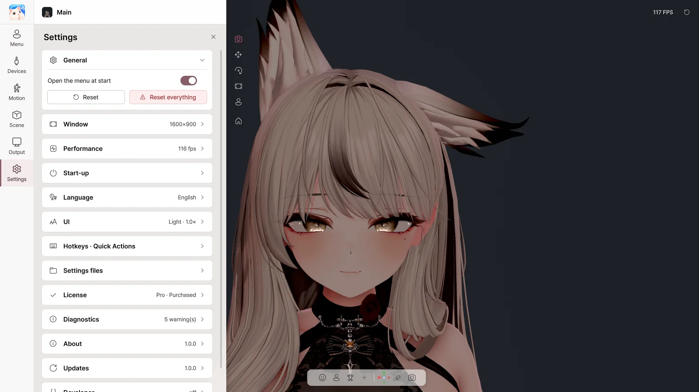
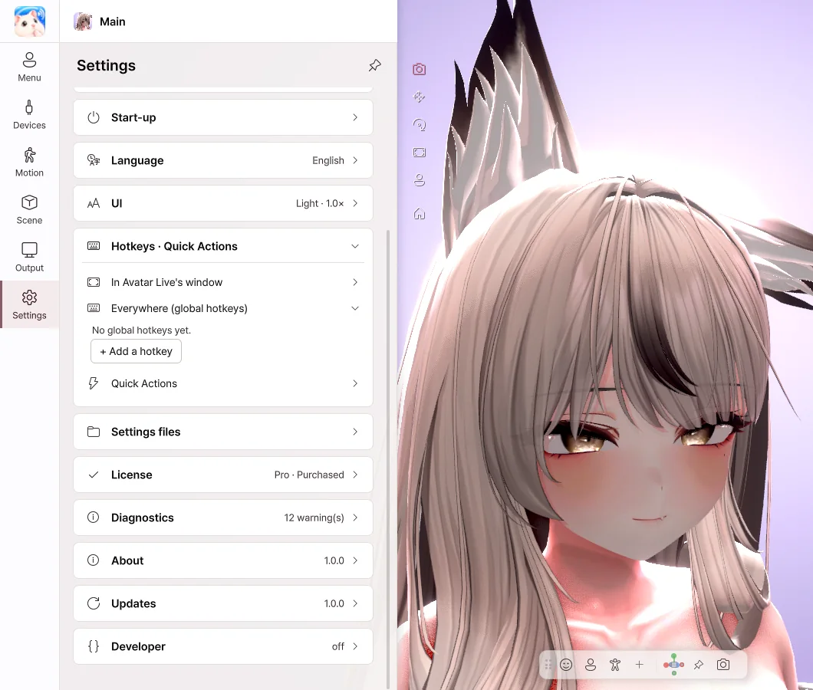

10. Settings
General · Window · Performance

- Open the menu at start — Turn it off to start without the menu.
- Window — Set the window size, full screen, always on top, and what the X button does.
- Performance — Set the frame rate and image quality. Lowering them puts less load on your PC.
- Shadows — The shadows that the hair and chin cast on the neck and chest. Turning them off puts less load on the GPU.
- Language — 한국어 · English · 日本語 · 简体中文
- UI — Change the theme, panel position and text size.
Hotkeys

- Click + Add a hotkey, then choose an action and a key.
- Hotkeys work even while you're in a game or Avatar Live is in the background.
- Your key presses still reach other programs as usual.
- For menu buttons and gestures, you can choose While held or Press to switch.
License
Check your current edition.
| Button | What it does |
|---|---|
| Enter another code | Switches to another license. |
| Upgrade to Pro | Enter the upgrade you bought on BOOTH to switch to Pro. |
| Check now | Checks the license again. |
Diagnostics · Updates
| Item | What it does |
|---|---|
| Send an error report | When something goes wrong, sends a description and the logs. It is sent only when you click it. |
| Open log folder | Lets you look at the log files. |
| Check now · Download | Checks for a new version and downloads it. |
| Restart to install | Updates right away. Your avatars and settings stay as they are. |